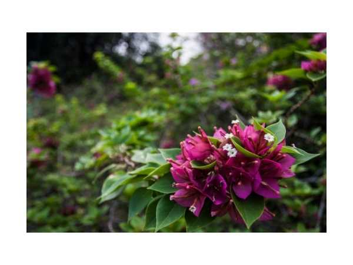

Bougainvillea spectabilis
Common Names: Red Bougainvillea, Paper Flower, Bugambilia, Great Bougainvillea
Local Name: Kagitha Poo (Tamil), Bougainvillea (Hindi/English)
Family: Nyctaginaceae
Origin: Brazil (South America)
Plant Type: Perennial evergreen thorny climbing shrub
Variety: Red-bracted variety; bracts are the showy part, not petals
Average Lifespan: 20–50+ years
| Growth Habit | Vigorous thorny climbing shrub; scrambles over supports using thorns |
| Plant Size | 4–12 meters as climber; 1–2 meters as pruned shrub |
| Leaves | Alternate, ovate; 4–10 cm long; mid-green; slightly hairy; deciduous in dry season |
| Flowers | True flowers are tiny white tubular structures; surrounded by 3 large papery red bracts (the showy part) |
| Flower Characteristics | Bracts are the ornamental feature; paper-thin texture; blooms profusely after stress (drought or root restriction) |
| Root System | Deep, extensive root system; very drought-tolerant once established |
| Climate | Tropical, subtropical, and Mediterranean; thrives in warm, dry conditions |
| Temperature Range | 15–35°C; frost-sensitive; tolerates brief cold spells |
| Rainfall Requirement | 500–1500 mm; dry period triggers prolific flowering |
| Soil Type | Well-drained sandy loam to loam; tolerates poor soils; dislikes waterlogging |
| Soil pH Preference | 5.5–7.0 |
| Sun Requirement | Full sun (6+ hours); essential for prolific flowering |
| Spacing | 2–4 meters apart; needs strong support structure |
| Irrigation Method | Drip or basin; reduce watering to trigger flowering; avoid waterlogging |
| Water Requirement | Low to moderate; drought stress promotes flowering |
| Can it Grow in Pots? | Yes, excellent in pots (20–40 liters); root restriction promotes flowering |
| Fertilizer Schedule | Monthly; high-phosphorus and potassium; avoid excess nitrogen (promotes foliage over flowers) |
| Recommended Organic Fertilizers | Bone meal, wood ash, vermicompost; banana peel compost for potassium |
| Pesticide Frequency | As needed; generally pest-resistant |
| Recommended Organic Pesticides | Neem oil for aphids and loopers; insecticidal soap for mites |
| Mulching Practice | Light mulch around base; avoid heavy mulching (promotes root rot) |
| Training System | Train on trellis, pergola, or wall; tie branches to guide; thorns help it grip |
| Pruning Time | After each flowering flush; major prune after monsoon season |
| How to Prune | Cut back by one-third to one-half after flowering; wear thick gloves (sharp thorns); promotes new flowering growth |
| Common Pests | Aphids, loopers (caterpillars), mealybugs, scale insects |
| Common Diseases | Root rot in waterlogged soils; leaf spot; chlorosis in alkaline soils |
| Disease Prevention & Remedies | Excellent drainage; avoid overwatering; iron chelate for chlorosis; neem oil for fungal issues |
| Flowering Months | Multiple flushes; peak November–April (dry season); triggered by drought stress |
| Pollination Type | Insect-pollinated (bees, butterflies) |
| Pollination Notes | Bracts last 4–6 weeks; true flowers are small and white; rarely sets seed in cultivation |
| Pollination Details | Insect-pollinated; bracts attract pollinators to small true flowers |
| Propagation by Seeds | Rarely used; seeds not commonly available; slow germination |
| Propagation by Cuttings | Hardwood or semi-hardwood cuttings root well; preferred method; use rooting hormone; wear gloves |
| Propagation by Grafting | Grafting used to combine multiple colors on one plant |
| Water Usage | Very low; one of the most drought-tolerant ornamental plants |
| Soil Conservation Practices | Excellent for erosion control on slopes; dense thorny growth forms protective barriers |
| Organic Practices Used | Minimal inputs; very low maintenance once established |
| Companion Plants | Grows well with other drought-tolerant plants; good backdrop for tropical gardens |
| Biodiversity Benefits | Attracts butterflies and bees; thorny growth provides nesting habitat for birds |
| Symbolism | Symbol of welcome and hospitality; national flower of Grenada and Guam; widely used in tropical landscaping worldwide |
| Traditional Uses | Bracts used in traditional medicine for respiratory conditions; used in herbal teas in some cultures |
Add your field observations here.